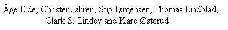
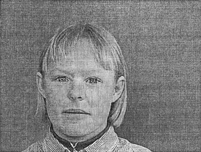
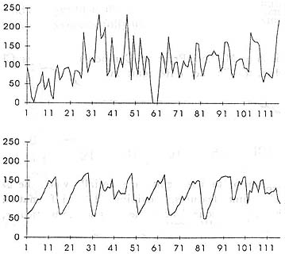
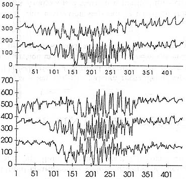
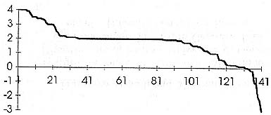
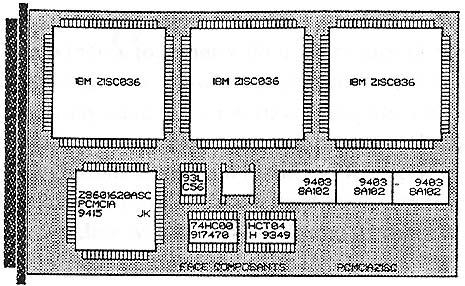

Eye Identification for Face Recognition with Neural Networks

From : SPIE Vol. 2760, Page 333-338
Abstract
The problem of facial recognition from gray-scale video images is approached using a two-stage neural network implemented in software. The first net finds the eyes of a person and the second neural network uses an image of the area around the eyes to identify the person. In a second approach the first network is implemented in hardware using the IBM ZISC036 RBF-chip to increase processing speed. Other implementations in hardware are also discussed, and includes preprocessing using wavelet (packet) transform.
The first stage neural network adopted a conventional feedforward network with one hidden layer. The network had 117 inputs and 15 hidden nodes and one output node. It was trained using the backpropagation algorithm using a sigmoid or tanh as transfer function.
The network used 373 images for training and 141 independent images for testing. The windows with 13*9 pixels (hence 117 inputs) are shown in fig. 1. Examples of input vectors are shown in fig. 2.

Figure 1. Facial image with rectangles of 13*9 pixels over the eyes.

Figure 2. Input vectors from a window on a persons eye (top) and from another part of her face (bottom). The window has 13*9 pixels and the data is plotted linearly.
While the first stage neural network finds the common properties of eyes, the second one should find the difference. This neural network is of the same architecture but has 441 input nodes, 30 hidden nodes and has as many output nodes as individuals to be recognized. A square window of 21*21 pixels was used rather than the rectangular 13*9 pixel.
The input to this network is shown in fig. 3. It is quite clear that the eyes are most similar in the center.

Figure 3. Two input vectors from the same person to the neural network trained for identification (top), and three input vectors of the eyes of three different persons(bottom).
The neural network was tested using 141 images of 25 persons. The result is shown in fig. 4, where the output value of the node representing the desired output minus the second largest node output is plotted. The desired value is +1 for the node corresponding to the right person and -1 for all other nodes.
The drawback with the suggested system is that when run on a Pentium personal computer it is too slow, and when implemented in hardware it is too large and/or expensive.

Figure 4. Results of testing the neural network using 141 images.
Negative values will thus represent misidentified cases.

Figure 5. The implementation of three IBM ZISC036 RBF chips on a
PCMCIA card.
With the hardware in mind, one may choose to use the two projections of the window together with a histogram of the greyscale.
Another approach to reducing the number of inputs is to use a wavelet (or wavelet packet) transform preprocessor. This processor computes both the forward and inverse wavelet transform on one-dimensional data streams. The circuit will then be used to calculate the transform, and the largest coefficients are retained and fed to the neural network doing the identification.
Created by : Lin-Hung Shen
Date :Apr. 10, 1997